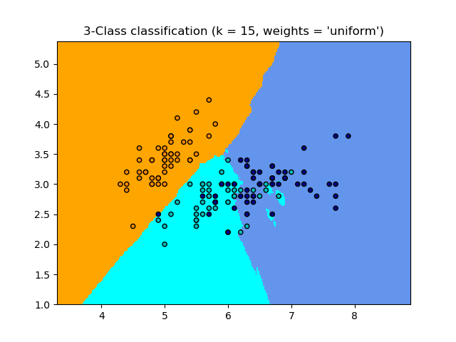
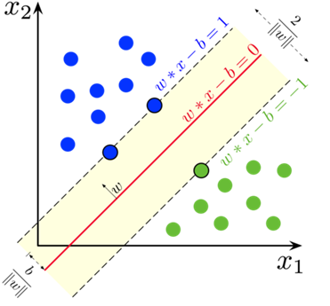
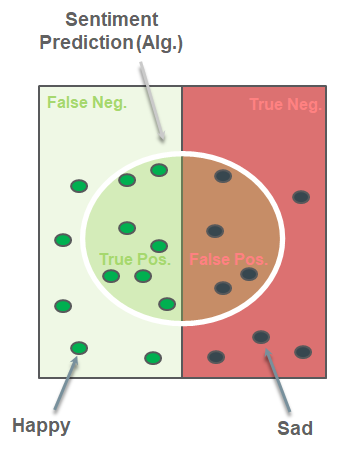

6.2 Traditional Text Classification
BoW or TF-IDF features with a linear or neighbor model.
1. Two classical classifiers
Once the document is a vector (BoW or TF–IDF from Week 4), you can use any supervised model. Lecture walks two that you should be able to explain: (k)-nearest neighbors and a linear SVM.
The rest of the note is how you choose hyperparameters and how you score the classifier when classes are not 50/50. That part matters more than the algebra.
Practical Natural Language Processing is the course text. The pictures of CV and metrics are standard ML.
2. (k)-nearest neighbors
Store the training set. To label a new point, find the (k) nearest training vectors (Euclidean or cosine) and take a majority vote.

There are no weights to learn. The whole training matrix is the model. That is fine for a few thousand short documents and painful for a million.
(k) is a hyperparameter. Small (k) follows local noise. Large (k) smooths toward the majority class. On TF–IDF, cosine is the usual distance.
3. Linear SVM
Training pairs ((\mathbf{x}_i, y_i)) with (y_i \in {+1, -1}). A linear SVM finds a hyperplane (\mathbf{w}\cdot\mathbf{x} - b = 0) that separates the classes with the largest margin.
You minimize (|\mathbf{w}|) subject to (y_i(\mathbf{w}\cdot\mathbf{x}_i - b) \ge 1).

In text, (\mathbf{x}) is usually L2-normalized TF–IDF. LinearSVC or SGDClassifier(loss="hinge") is what you call. A kernel SVM on a 50,000-column bag is rarely worth it. The linear version is the baseline to beat.
4. Cross-validation and hyperparameters
Parameters are what the learner sets from data: (\mathbf{w}), the support vectors, the neighbor labels. Hyperparameters are what you set: (k), the SVM’s (C), max_features, n-gram range. If you tune (C) on the same fold you report, the score is optimistic.
Hold-out: train / validation / test. Fit on train, pick hyperparameters on validation, report once on test.
(K)-fold: split train into (K) pieces. Each piece is validation once. Average the (K) scores. Use this when the data set is not huge.
Nested CV: the inner loop picks hyperparameters; the outer loop estimates generalization. That is the honest number when you need one number for a paper or a client and you already used the data to search.
If you only remember one rule: the test set is not a tuning knob.
5. Metrics when accuracy lies
Accuracy is correct / total. It is fine when classes are balanced. It is not fine when 95% of tickets are “general inquiry.” A model that always says “general” is 95% accurate and useless.
For a class you care about (say happy):
| Metric | Question it answers |
|---|---|
| Precision | Of the docs I called happy, how many were? |
| Recall | Of the happy docs, how many did I find? |
| F1 | Harmonic mean of the two |
| ROC | True-positive rate vs false-positive rate as you move the threshold |

F1 punishes a system that only wins on one of the two. ROC / AUC is useful when you will pick a threshold later.
sklearn: precision_score, recall_score, f1_score, roc_curve, and classification_report.
from sklearn.metrics import classification_report
print(classification_report(y_true, y_pred, target_names=["class 0", "class 1", "class 2"]))
Read the per-class rows, not just the headline accuracy.
6. Practice
-
Training data are 90% ham. A filter that never flags spam has high accuracy. Which metric exposes that it found no spam?
-
You pick (k) by maximizing accuracy on the test set. What is wrong, and what should you use instead?
-
Why is a linear SVM the usual text baseline rather than an RBF kernel SVM?